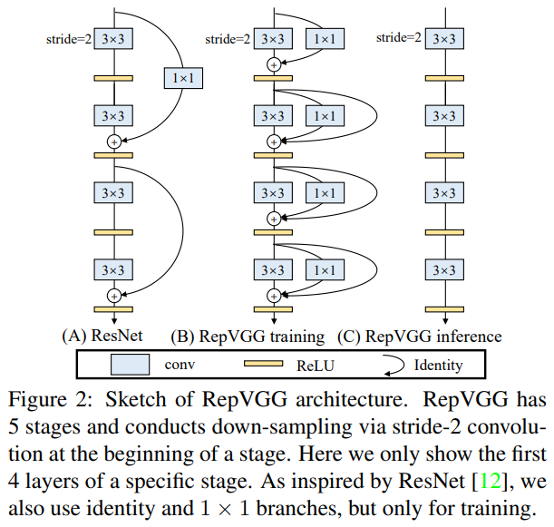
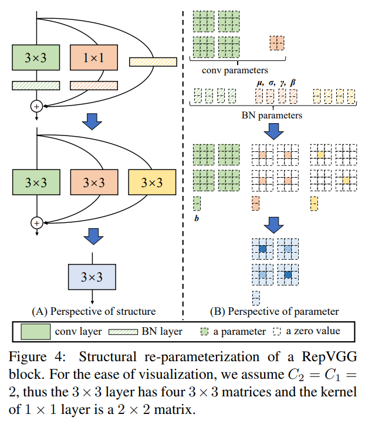
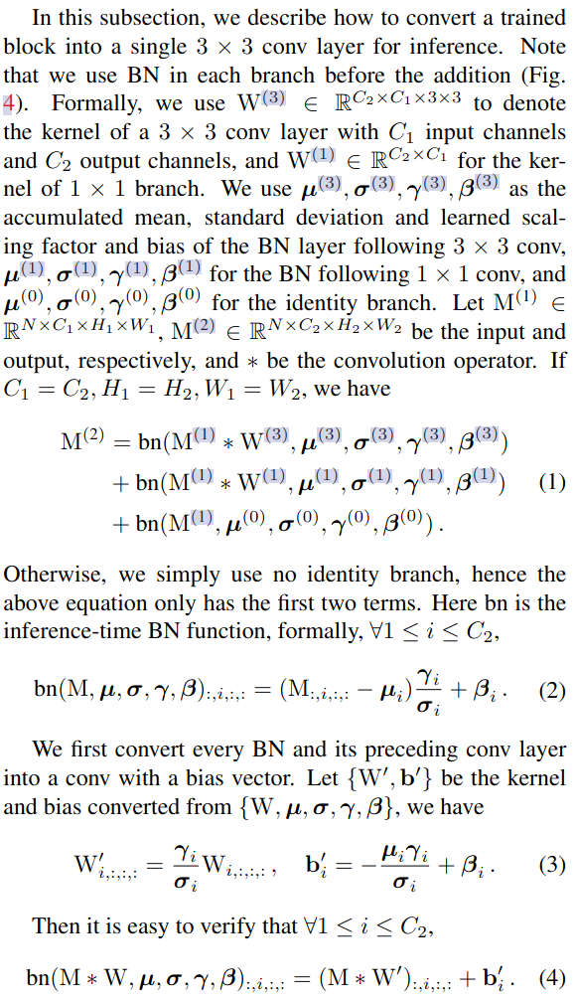
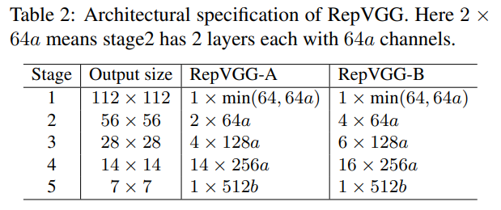

RepVGG论文与代码阅读

论文：RepVGG: Making VGG-style ConvNets Great Again
作者：Xiaohan Ding, Xiangyu Zhang, Ningning Ma, Jungong Han, Guiguang Ding, Jian Sun
录用情况：CVPR'2021
第一作者单位：Beijing National Research Center for Information Science and Technology (BNRist); School of Software, Tsinghua University, Beijing, China
本文借助重参数化技巧，提出了一个在训练时多分支，而在推理时为类似于VGG的直筒形网络（3x3卷积+ReLU堆叠成的基本块），命名为RepVGG。这是第一次一个简单的模型在ImageNet上获得了80%以上的top1准确率，并且直筒形状的结构让RepVGG有着很高的计算密度与推理速度，相比于EfficientNet和RegNet有更好的性能与速度的折中。作者本人在知乎上的稿子。代码仓库。
方法
为什么需要多分支的网络
我们不否认直筒型的、深层的网络理论上具有足够的学习能力，但是很难训练；从GoogLeNet、ResNet起，大家就尝到了多分支网络的甜头，对于shortcut连接，一些普遍的解释为：
- 获得了多种浅层模型的集成的效果，具体地说，\(n\)个有shortcut的block，相当于\(2^n\)个网络的集成；
- 在非线性层存在的前提下，复杂的连接，增加了模型的非线性；
然而，这种多分支结构也引入了缺陷：
- 多分支使得显存消耗增加；
- 复杂的模型降低了并行度；
作者指出，尽管一些模型具有较低的FLOPs，但是因为并行度不够等原因，计算密度低，模型在推理时的速度慢。
模型重参数化
本文的重参数化，侧重于“使用先前的模型结构的参数，构造新结构的参数，使得模型结构修改前后，对于数据流的作用是等价的”，即找到一种参数的代数变换，使得\(x+g(x)+f(x)=h(x)\)；
作者在文中强调了这个工作与DiractNet的区别：DiractNet的重参数化是用得到的参数计算另一个数学表达式来优化。笔者后续也会更新一些别的重参数化的论文阅读。
Winograd Convolution
这是一种对于步长为1的3x3卷积的加速算法，对于\(F(2\times 2, 3\times 3)\)（表示输出尺寸为2x2，卷积核尺寸为3x3的一卷积运算），考虑每一个输出的每一个位置来自一对长度为9的向量的内积，标准卷积方法需要2x2x3x3=36次乘法计算，而winograd方法通过观察到im2col之后的矩阵存在大量重复元素，设计算法将乘法次数减少到16次。这个slide清楚地讲述了在\(F(2,3)\)上的算法，又如何扩展到\(F(2\times 2, 3\times 3)\)，进而再扩展到更大尺寸，更多通道上的3x3步长1卷积。
作者整个模型都使用3x3,stride=1的卷积，旨在利用上这种加速算法。
训练时块结构与重参数化方法

作者为每个块设计了两条额外分支，在每个块的最后（图中没有画出来）的是ReLU非线性层，不参与后续的重参数化。在推理前，目的时将3个分支的参数合并到单分支的3x3卷积中去。

上图主要展示了，如何将1x1卷积和原始输入构造为具有等价输出的3x3卷积，下面的公式化描述介绍了如何“吸BN”。

在实现时，注意的第一个细节是，将1x1卷积转化为3x3卷积时，除了给卷积核pad 0之外，图像的padding也要减去\(\lfloor \frac{\text{kernel size}}{2}\rfloor\)，这才使得结果等价。
另一个细节是，由于作者穿插设置了部分块使用分组卷积（后面的整体架构一节中会讲到），对于3x3卷积和1x1卷积的分支，在重参数化时没有什么需要对此特殊处理的，对与将恒等映射改写为3x3卷积的情况，则需要注意分组卷积的组数。
分组卷积，就是将\(C_1\)维的输入tensor和\(C_2/g\)个\(C_1\)维卷积核分成\(g\)个\(C_1/g\)维的卷积，得到的\(g\)个\(C_2/g\)的tensor在channel维度拼接到一起。因此，对于恒等映射等价的第\(i\)个卷积核，应该只在\(i ~\text{mod}~ g\)维的3x3的矩阵的中心为1。
对于一个RepVGGBlock，作者定义了switch_to_deploy方法，在训练后，推理前，遍历网络并对所有RepVGGBlock调用该方法：
1 | def switch_to_deploy(self): |
1 | def get_equivalent_kernel_bias(self): |
1 | def _fuse_bn_tensor(self, branch): |
整体架构
作者配置架构的原则就两个：简单的根据经验设置+减少参数；

上表展示了不同分辨率的特征图有几个block，以及每个block的通道数，其中\(a, b\)是缩放因子，有\(a<b\)，stage1个stage5都只有一一个block的原因是为了减少参数量。
可选的，可以穿插地将部分block的groups设置为一个全局常数，比如2或者4。相邻的block都使用分组卷积，可能会导致通道内信息交换受限。
最新的代码中，作者添加了RepVGGplus，使用了更深的层数，辅助头，以及在非线性层之后使用SEBlock。
实验
这一部分作者想强调的点在于，他们使用了Pytorch官方教程中简单的数据增强，随心的模型配置，就让推理时的模型获得了相比于同样训练设置下参数相近的ResNet， EfficientNet, ResNeXt等更快的推理速度和更好的性能（尽管该模型往往参数量更大，FLOPs更大，但速度却最快）。
在消融实验中，作者不仅证明了3个并行分支，一个不能少，并且，通过将ResNet中的Block替换为RepVGG Block，证明了性能的优越并不是靠在训练时堆参数得到的。
此外作者还刷了刷Cityscapes的点。
实验结果的细节见论文，并且在仓库中，作者更新了最新的模型配置与性能（在ImageNet上最高刷到了84.06%）。
总结
本文提出的结构重参数化技巧让VGG风格的模型“再次伟大”，本质上还是利用数学上的等价转换将训练好的复杂模型简化。除了卷积，其他算子（如MLP）有没有响应的简化方法？该模型虽然速度快，适用于满载荷的业务场景，但是较高的FLOPs也将带来更多功耗，这在各种终端中也是至关重要的。